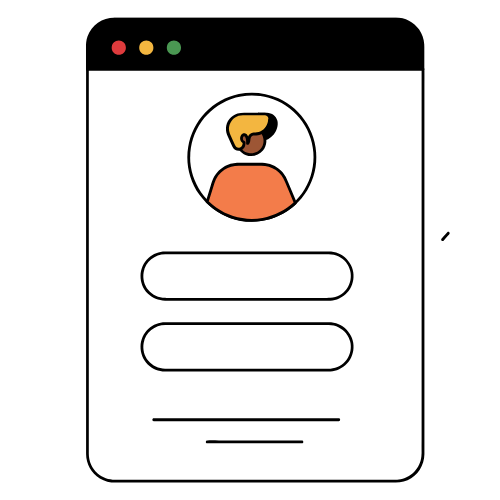
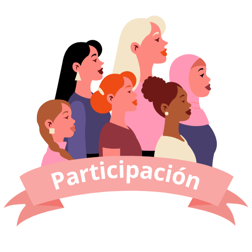
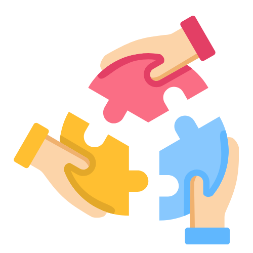
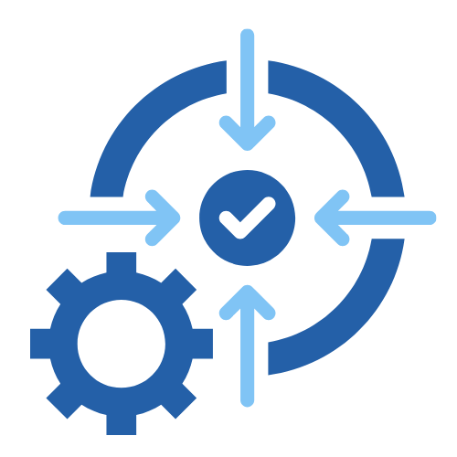

Anàlisi de l'impacte de les comunitats a Barcelona
Objectiu
Avaluar l’impacte de les comunitats de dones en tecnologia a Barcelona
Metodologia
Enquesta dirigida a professionals del sector tecnològic
ODS
Contribució als Objectius de Desenvolupament Sostenible
Context de l'Estudi
Aquest dashboard presenta els resultats d'una enquesta realitzada a professionals del sector tecnològic a Barcelona, amb l'objectiu d'analitzar l'impacte de les comunitats de dones en tecnologia.
Les dades recopilades ens permeten entendre millor com aquestes iniciatives contribueixen a la inclusió, el desenvolupament professional i la superació de barreres en el sector tecnològic.
Àrees d'Anàlisi
- Perfil sociodemogràfic de les participants
- Nivells de participació en comunitats
- Impacte en la inclusió tecnològica
- Barreres superades i beneficis obtinguts
- Contribució als ODS
 Perfil Sociodemogràfic
Característiques demogràfiques i professionals de les participants
Distribució per Edat
Nivell Educatiu
Experiència en Tecnologia
Sector d'Organització
 Participació en Comunitats
Anàlisi de la participació activa en comunitats tecnològiques
Freqüència de Participació
Rols Tècnics de Lideratge
Estructura Organitzativa de Comunitats
Forma Principal de Participació
 Inclusió en Entorns Tecnològics
Avaluació de l'impacte en la inclusió i pertinença
Contribució a la Inclusió
Augment de Dones en Equips Tech
Pertinença Activa en Comunitats
Estructura Col·laborativa i Equitat
 Impacte d'Iniciatives
Anàlisi de l'impacte de les iniciatives comunitat-empresa
Activitats Efectives per a l'Equitat
Contribució a ODS 5
Expansió de Xarxa Professional
Accés a Oportunitats Laborals
🚧 Barreres Superades
Anàlisi de les barreres que les comunitats han ajudat a superar